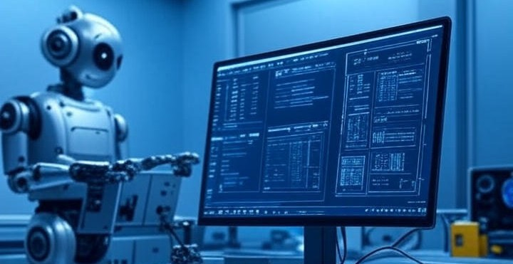

üõ†Ô∏è Enfoque Instrumental
- Es neutral: Se la utiliza con un fin específico.
- Control: El ser humano determina completamente su uso.
- Evaluación: Se mide por su eficiencia y funcionalidad técnica.
- Responsabilidad: Recae exclusivamente en el usuario final.
- Relación: Es externa y separada de la sociedad.
Ejemplo: Gmail
Envio un correo Gmail en el cual uso la tecnología IA , para tener una mejor redacción. El que lo recepciona es el que me contesta , si es que realmente corresponde responder.
üåê Enfoque Relacional
- No es neutral: Tiende a transformar al sujeto y la cultura.
- Valores: La tecnología incorpora ideologías y relaciones de poder.
- Evaluación: Se mide por su impacto social, ético y cultural.
- Responsabilidad: Es compartida entre diseñadores, usuarios y reguladores.
- Relación: Está integrada e incrustada en el tejido social.
Ejemplo: Hermanos distanciados geográficamente
José y María son hermanos, tienen el medio de tecnología que es el teléfono inteligente el que contiene WhatsApp, esta herramienta les ayuda para una comunicación relacional, pero aquella comunicación solo es una conversación mutua sin nada a cambio.